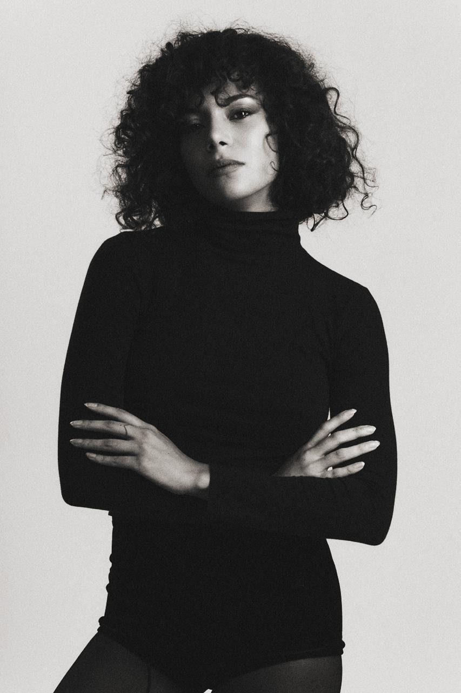
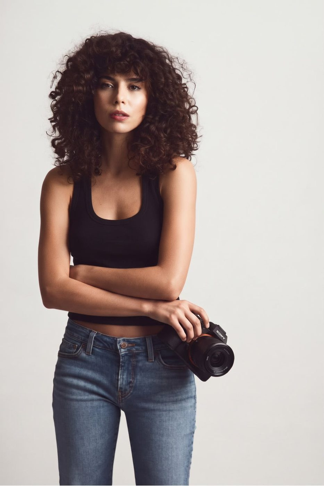
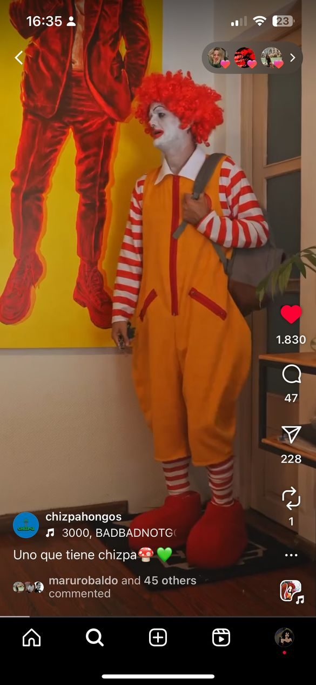
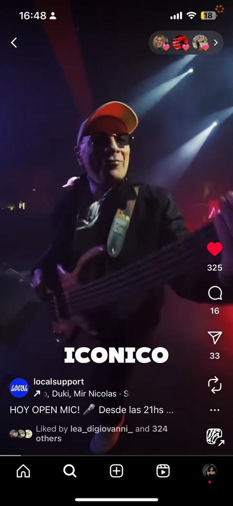
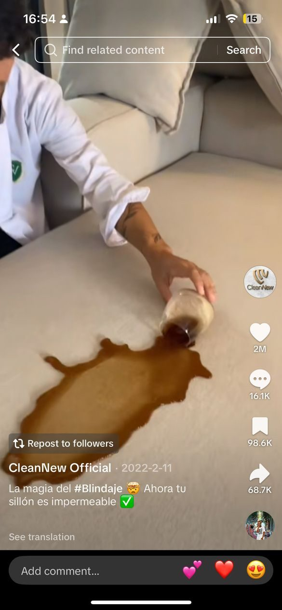

Gianna Dallape
.
Work
About
Services
Social
Contact
EN
ES
FR
Gianna
Dallape
.
Start a project
Selected work
Gianna Dallape,
Statement
Both sides of the lens
About


Services
Social media



×7.8
1,477
11,540
Process
Contact
dallapegia@gmail.com
Copy address
Instagram ↗
LinkedIn ↗
Barcelona · +34 664 265 622
Name / Brand
Email
What do you need
Tell her about the project
Send my brief
Gianna Dallape
.
©
2026
Gianna Dallape ·
Made by @timmyname
Back to top ↑
Close ✕
← Prev
Next →


